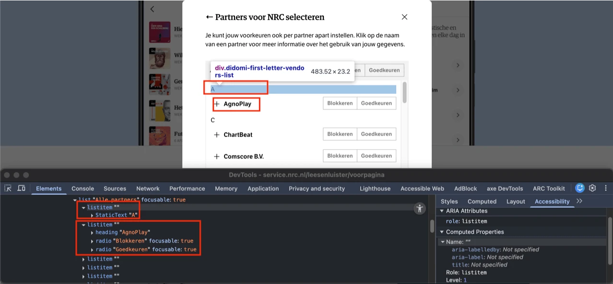
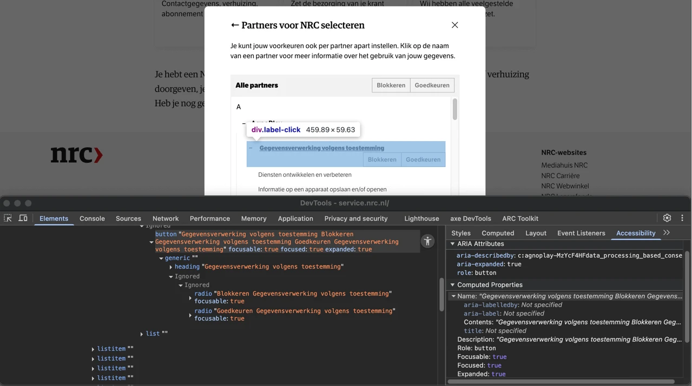
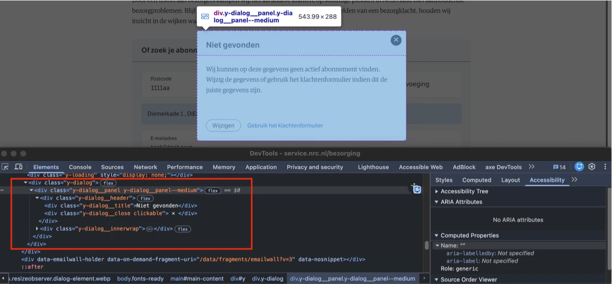
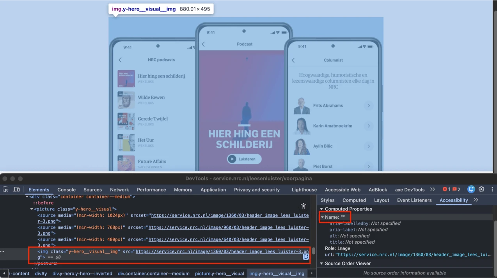
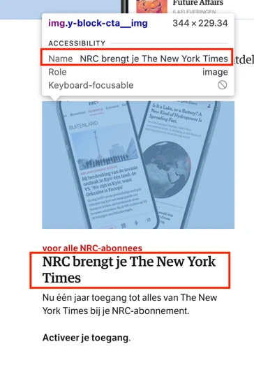
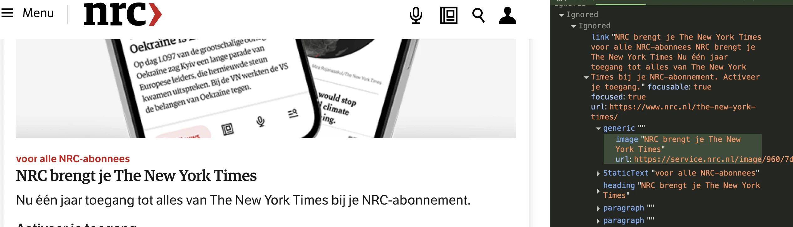
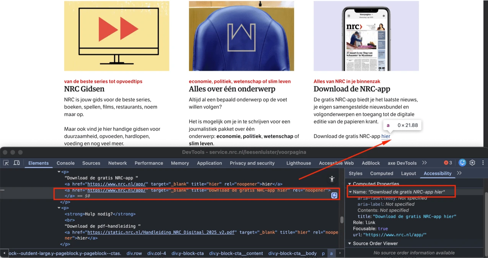
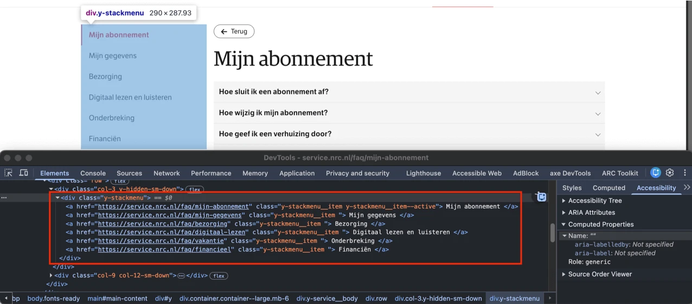
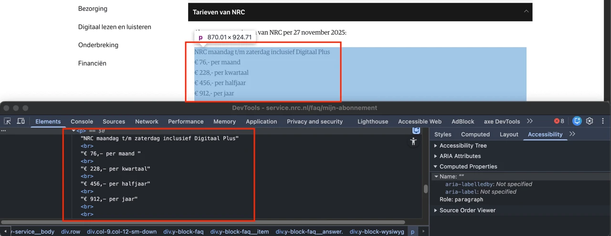
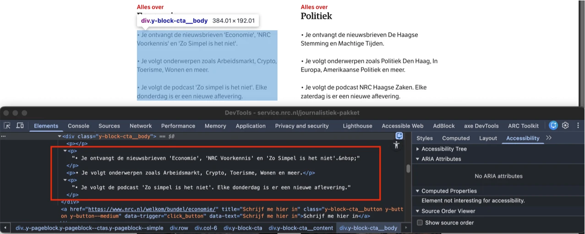

Audit digitale toegankelijkheid van website service.nrc.nl
Samenvatting
Wij hebben de website service.nrc.nl onderzocht tussen 1 en 15 december 2025. Op dit moment zijn 33 van de 55 succescriteria als voldoende beoordeeld. In dit rapport lees je wat er bij de overige 22 nog fout gaat, en hoe je dat kunt verbeteren.
#1 - Meerdere pagina’s hebben dezelfde title-tekst
Impact: MediumType: ContentWCAG: 2.4.2EN: 9.2.4.2
Deze pagina heeft in het title-element de tekst “Mijn abonnement | NRC Service”.
De pagina op https://service.nrc.nl/faq/mijn-abonnement gebruikt vrijwel dezelfde titel: “Mijn abonnement - NRC Service”.
Dit is niet wenselijk. Elke pagina moet een uniek ‘titel’-element hebben dat de inhoud van de pagina beschrijft, bij voorkeur gevolgd door de naam van de organisatie. Wanneer meerder pagina’s dezelfde titel hebben, kan dit verwarrend zijn voor bezoekers en wordt navigeren tussen pagina’s lastiger.
Oplossing:
Pas de tekst in het title-element aan zodat deze op elke pagina uniek is en de inhoud van die pagina nauwkeurig weergeeft.
#2 - Onjuist gebruik van een kopelement
Impact: MediumType: ContentWCAG: 1.3.1EN: 9.1.3.1
De tekst die begint met "Om je abonnement te bekijken …" is geen kop, maar is onterecht als <h3> gemarkeerd.
Oplossing:
Verwijder het <h3>-element en gebruik een ander passend element, zoals een <p>. De gewenste opmaak kan vervolgens met CSS worden toevoegd. Op deze pagina staat een instructie om zelf te testen of koppen op een webpagina correct zijn toegepast: https://properaccess.nl/zo-controleer-je-de-koppenstructuur-van-je-website/.
Op alle pagina's van de website is de toetsenbordfocus niet zichtbaar op interactieve elementen. Dit geldt onder meer voor de links en knoppen in de header, zoals de knop “Menu”, de items in het uitklapmenu, de nrc-logolink, navigatielinks zoals “Home” en “Bezorging”, en overige links zoals “Abonneren” en “Podcasts”.
De toetsenbordfocus moet altijd zichtbaar zijn op interactieve elementen zoals links, knoppen en invoervelden. Gebruikers die met het toetsenbord navigeren moeten duidelijk kunnen zien waar de focus staat; zonder zichtbare focus weten zij niet wanneer ze op Enter moeten drukken om een element te activeren.
Oplossing:
Zorg dat de toetsenbordfocus zichtbaar is op de genoemde elementen.
Verwijder outline: none die momenteel op alle interactieve elementen is geplaatst.
Op alle pagina’s verwijst de skiplink naar het main-element. Binnen dit element staan echter ook navigatielinks die op meerdere pagina’s terugkeren, zoals “Home”, “Bezorging” en “Onderbreking”. Hierdoor wordt deze herhaalde navigatie niet overgeslagen en kunnen toetsenbordgebruikers de hoofdinhoud niet direct bereiken.
De skiplink moet verwijzen naar het begin van de unieke paginainhoud, zodat gebruikers herhalende of niet-essentiële onderdelen kunnen overslaan.
Oplossing:
Zorg dat de skiplink verwijst naar het juiste startpunt van de unieke content op de pagina.
Dit is op te lossen door het element nav class=”y-menu” naar het <header> te verplaatsen. Een andere optie: de skiplink te verplaatsen naar het <div> waarin de unieke inhoud van elke pagina in staat.
Alle pagina’s die op de website staan, moeten op meerdere manieren kunen worden gevonden.
Oplossing:
Zorg dat de webpagina’s op meerdere manieren bereikbaar zijn. Dat mag via een zoekveld, een sitemap of een inhoudsopgave.
#6 - Tekstalternatief van het logo is niet voldoende (in de cookiemelding)
Impact: GrootType: ContentWCAG: 1.1.1EN: 9.1.1.1
Op elke pagina verschijnt bij het eerste bezoek een cookiemelding. In dit dialoogvenster staat bovenaan het logo met de tekst “nrc”, maar de alt-tekst luidt alleen “logo”. Het tekstalternatief bevat daarmee niet de volledige zichtbare tekst. Dit is wel vereist, zodat ook bezoekers die het beeld niet kunnen zien precies weten wat er in het logo staat.
Oplossing:
Verander de alt-tekst zodat de volledige tekst van het logo erin staat: “nrc”.
In de cookiemelding heeft het img-element met het NRC-logo de attributen role="heading" en aria-level="1". Dit is onjuist, omdat dit element geen echte kop is: het leidt geen inhoud in en geeft geen structuur aan de pagina.
Koppen zijn bedoeld om structuur te geven aan de informatie op een pagina. Schermlezers vertrouwen op koppen om te navigeren en de opbouw van de pagina te begrijpen. Zorg er daarom voor dat alleen tekst die daadwerkelijk als (tussen)kop fungeert, als kop wordt gemarkeerd.
Schermlezers zullen deze kop voorlezen als “Logo, heading level 1”. Dat geeft geen extra informatie of context. Vooral voor bezoekers die een schermlezer gebruiken is dat een probleem. Zij gebruiken koppen om snel de structuur van een pagina te overzien en relevante inhoud te vinden.
Oplossing:
Verwijder het attribuut role="heading" en het attribuut aria-level="1" van deze afbeelding.
#8 - Kleurcontrast van tekst is te laag (tekst kleiner dan 24px en niet vetgedrukt)
In de cookiemelding wordt na het activeren van de knop “Zelf instellen de sectie “Cookies bij Mediahuis NRC” getoond. In deze sectie hebben de knoppen “Niet akkoord” en “Akkoord” grijze tekst (#757575) op een lichtgrijze achtergrond (#F4F4F4). De contrastratio is 4,2:1.
Dezelfde kleurcombinatie wordt gebruikt voor de tekst “Stel al uw voorkeuren in om op te slaan en verder te gaan”, die eveneens een contrastratio van 4,2:1 heeft.
Wanneer de knoppen “Akkoord” in deze sectie is ingedrukt, staat witte tekst op een groene achtergrond (#63972F). De contrastratio is dan te laag: 3,5:1.
Dezelfde contrastproblemen komen voor bij de knoppen “Blokkeren” en “Goedkeuren” in de sectie “Partners voor NRC selecteren”. Deze sectie wordt geopend via de knop “Partners bekijken” in de sectie “Cookies bij Mediahuis NRC”.
Oplossing:
Deze tekst is kleiner dan 24px en niet vetgedrukt. Daarom moet het minimale contrast 4,5:1 zijn. Op deze pagina staat een instructie die uitlegt hoe je kleurcontrast kunt testen: https://properaccess.nl/hoe-test-ik-kleurcontrast/.
#9 - De toestand van het keuzerondje is onjuist gecodeerd
Impact: GrootType: TechniekWCAG: 4.1.2EN: 9.4.1.2
In de cookiemelding staan in de sectie “Cookies bij Mediahuis NRC” de knoppen “Niet akkoord” en “Akkoord”. Bij deze knoppen zijn meerdere toegankelijkheidsproblemen vastgesteld.
In de code worden deze knoppen weergegeven als <div>-elementen met role=“radio” en het ARIA-attribuut aria-pressed. Dit is onjuist: aria-pressed hoort bij role=“button” en niet bij role=“radio”. Voor keuzerondjes moet aria-checked worden gebruikt om de geselecteerde optie aan te geven. Het combineren van ARIA-attributen die niet bij elkaar passen, leidt tot verwarring voor schermlezers en vermindert de toegankelijkheid.
Dezelfde problemen komen voor bij de knoppen “Blokkeren” en “Goedkeuren” in de sectie “Partners voor NRC selecteren”.
Daarnaast ontbreekt de verwachte toetsenbordinteractie voor keuzerondjes. Gebruikers moeten met de pijltjestoetsen tussen de opties binnen de groep kunnen navigeren.
Oplossing:
Gebruik het attribuut aria-checked om geselecteerde elementen met role="radio" aan te geven en verwijder het onjuiste attribuut aria-pressed. Implementeer daarnaast de vereiste toetsenbordinteractie, zodat gebruikers met pijltjestoetsen tussen de opties in de groep kunnen navigeren. Voor meer informatie, zie de pagina: https://www.w3.org/WAI/ARIA/apg/patterns/radio/.
#10 - De structuur van de lijst is onjuist
Impact: MediumType: ContentWCAG: 1.3.1EN: 9.1.3.1

In de cookiemelding wordt in de sectie “Partners voor NRC selecteren” onder “Alle partners” een alfabetische lijst getoond. Elke letter, zoals “A”, groepeert visueel visueel de partners die met die letter beginnen, zoals “AgnoPlay”.
In de code wordt de letter “A” echter als een lijstitem weergegeven, evenals de partnernaam “AgnoPlay”. De partner staat dus niet als kind onder de letter, maar op hetzelfde niveau. Hoewel er visueel sprake is van een lijst met subitems, ontbreekt deze structuur in de HTML. De relatie tussen de lettergroepen en de bijbehorende partners wordt daardoor niet correct weergegeven. .
Voor schermlezergebruikers is hierdoor niet duidelijk dat de letter “A” een groep vormt met alle partners die met deze letter beginnen. De ontbrekende hiërarchie maakt het navigeren minder efficiënt en kan leiden tot verwarring voor zowel voor toetsenbord- en schermlezergebruikers.
Oplossing:
De volgende oplossingen zijn mogelijk:
Gebruik een geneste lijststructuur waarbij elke letter een lijstitem vormt dat een sublijst bevat met de partners als lijstitems. Hierdoor worden partners zoals “AgnoPlay” correct als onderliggende items onder de juiste letter gegroepeerd.
Een alternatief is om elke letter, zoals “A”, als kop te markeren (bijvoorbeeld h3 of h4) en daaronder een lijst (ul) te plaatsen met de partnernamen. Ook deze aanpak biedt een duidelijke structuur voor hulpsoftware en maakt snelle navigatie via koppen mogelijk.
#11 - Geneste interactieve elementen
Impact: GrootType: TechniekWCAG: 4.1.2EN: 9.4.1.2

In de cookiemelding wordt in de sectie onder “Partners voor NRC selecteren” een alfabetische lijst van partners weergegeven. Wanneer je op een partner klikt, bijvoorbeeld “AgnoPlay”, wordt extra inhoud geopend. In deze uitklapbare sectie staan div-elementen met role="button". Binnen deze elementen bevinden zich meerdere echte button-elementen met role=”radio”.
Interactieve elementen mogen echter geen andere focusbare onderdelen bevatten. Doordat de keuzerondjes binnen het klikbaar button-element zijn geplaatst, kunnen schermlezers en toetsenbordgebruikers onvoorspelbaar gedrag ervaren. De buitenste knop kan klikacties onderscheppen die bedoeld zijn voor de keuzerondjes, de focus kan op de verkeerde plaats terechtkomen en elementen worden niet correctaangekondigd of bediend. Dit verstoort de verwachte semantische structuur en belemmert een betrouwbare en toegankelijke interactie voor gebruikers van hulpsoftware.
Oplossing:
Verwijder de geneste interactieve elementen.
<h3> Gegevensverwerking volgens toestemming <button> Open/sluit sectie</button></h3>
<div> Inhoud van de sectie met interactieve elementen</div>
#12 - Naam van de knop beschrijft niet wat de knop doet
Impact: GrootType: TechniekWCAG: 2.4.6EN: 9.2.4.6
In de cookiemelding, in de sectie “Partners voor NRC selecteren” wordt een alfabetische lijst met partners weergegeven. In de uitklapsecties die worden geopend via knoppen zoals “AgnoPlay”, staat extra verborgen inhoud, waaronder “Gegevensverwerking volgens toestemming”. De knoppen die deze inhoud openen hebben echter toegankelijke namen die alle tekst uit de sectie bevatten. In de sectie van “AgnoPlay” wordt zo’n knop bijvoorbeeld aangekondigd als: “Gegevensverwerking volgens toestemming Blokkeren Gegevensverwerking volgens toestemming Goedkeuren Gegevensverwerking volgens toestemming”.
Oplossing:
Geef elke knop een duidelijke en beknopte toegankelijke naam die het doel van de knop weergeeft.
De huidige problemen ontstaan doordat het attribuut aria-describedby nu verwijst naar het span-element dat de volledige inhoud van de sectie bevat. Daardoor wordt al deze tekst meegenomen in de toegankelijke naam. Als aria-describedby=”didomi-vendors-details-title” zou worden gebruikt, zou de toegankelijke naam aanzienlijk korter en beter begrijpelijk zijn.
Deze aanpak kan het probleem verhelpen, maar het is nog beter om de volledige sectie opnieuw te implementeren volgens een toegankelijk patroon voor uitklapbare onderdelen (accordions). Dat biedt een robuustere, voorspelbare en beter navigeerbare structuur voor hulpsoftware.
#13 - Staat van menu niet doorgegeven aan schermlezer
Impact: GrootType: TechniekWCAG: 4.1.2EN: 9.4.1.2
In de header opent de knop “Menu” een navigatiemenu, maar voor blinde gebruikers is niet duidelijk of dit menu geopend of gesloten is. Bij een knop die een menu kan tonen of verbergen, moet hulpsoftware programmatisch kunnen vaststellen in welke toestand het menu zich bevindt.
Een vergelijkbaar probleem doet zich voor in het geopende navigatiemenu bij de knop “Service”, die een submenu opent zonder in de code aan te geven of dit submenu is ingeklapt of uitgeklapt.
Hetzelfde gebeurt in de header bij de knop met het vergrootglasicoon: deze opent een zoekbalk, maar de staat van die zoekbalk wordt niet programmatisch aangegeven.
Ook de knop met het profielicoon, die het menu “Mijn NRC” opent, geeft niet aan of dit menu open of gesloten is. Binnen “Mijn NRC” heeft de knop “Service” bovendien opnieuw hetzelfde probleem doordat de toestand van het submenu ontbreekt.
Oplossing:
Je kunt hiervoor het attribuut aria-expanded gebruiken. Laat de waarde van dit attribuut wisselen tussen true en false van de zichtbare toestand van het menu.
#14 - Toetsenbordfocus gaat buiten het navigatiemenu terwijl het menu open blijft staan
In de header opent de knop “Menu” een navigatiemenu. Op dit moment kunnen toetsenbordgebruikers echter buiten dit menu navigeren. De focus kan verschuiven naar onderliggende pagina-inhoud terwijl het menu zichtbaar, waardoor elementen die door het menu worden bedekt - zoals socialmedialinks in de footer of de zijbalk op https://service.nrc.nl/faq/mijn-abonnement - toch focusbaar zijn.
Hetzelfde probleem treedt op wanneer in het navigatiemenu de knop “Service” een submenu opent: de toetsenbordfocus kan het submenu verlaten en alsnog naar onderliggende inhoud gaan.
Elementen die toetsenbordfocus krijgen, moeten altijd zichtbaar en bereikbaar zijn. Als verborgen of bedekte elementen toch focus krijgen, raken toetsenbord- en schermlezergebruikers snel de context kwijt. Daarom mogenonderliggende interactieve elementen geen focus krijgen zolang het menu is geopend.
Oplossing:
Bij dit soort menu’s moet de toetsenbordfocus zorgvuldig worden beheerd. Wanneer het menu actief is, moet de focus binnen het menu blijven en mag deze niet op de onderliggende pagina terechtkomen.
Dit kun je op een van de volgende manieren oplossen:
Houd de focus binnen het menu totdat de bezoeker op de sluitknop klikt of de ESC-toets indrukt.
Sluit het menu automatisch zodra de toetsenbordfocus het menu verlaat.
#15 - Toetsenbordfocus komt niet op een logische plek nadat menu is gesloten
Impact: GrootType: TechniekWCAG: 2.4.3EN: 9.2.4.3
In de header opent de knop “Menu” een navigatiemenu. Binnen dit menu opent de knop “Service” een submenu. Nadat de bezoeker in dit submenu op de terugknop (met pijl) heeft geklikt, keert de toetsenbordfocus niet terug naar het element dat het submenu opende, en verschuift ook niet naar het eerstvolgende logische onderdeel. In plaats daarvan springt de focus naar de eerste link in het hoofdmenu (“Binnenland”).
Dit wijkt af van de verwachte focusvolgorde en kan toetsenbord- en schermlezergebruikers desoriënteren.
Oplossing:
Zorg ervoor dat de focus na het sluiten van het venster terugkeert naar het element waarmee het dialoogvenster werd geopend.
#16 - Toetsenbordfocus komt niet in het paneel met zoekbalk terecht
In de header opent de knop met het vergrootglasicoon een paneel met een zoekbalk. Wanneer dit paneel verschijnt, verplaatst de toetsenbordfocus zich echter niet naar het paneel. In plaats daarvan gaat de focus direct door naar de knop met het profielicoon, nog vóórt het paneel wordt bereikt. Dit vormt geen logische focusvolgorde: Zodra het paneel zichtbaar wordt, moet de focus daar automatisch naartoe gaan.
Dit probleem voldoet niet aan succescriterium 2.4.11, omdat de knop met het profielicoon focus krijgt terwijl deze visueel verborgen is achter het geopende paneel. Daarnaast kan de focus bij het gebruik van de tabtoets binnen het paneel ontsnappen naar elementen erachter. Daardoor kunnen verborgen knoppen en links in de header toch focusbaar worden terwijl het paneel nog openstaat, wat voor toetsenbord- en schermlezergebruikers verwarrend en desoriënterend is.
Oplossing:
Bij dit soort panelen moet de toetsenbordfocus zorgvuldig worden beheerd. Zodra het paneel opent, moet de focus direct naar het paneel gaan. Zolang het paneel zichtbaar is, moet de focus binnen het paneel blijven en mag deze naar de onderliggende pagina verschuiven.
Wanneer de website op een klein scherm wordt bekeken (bij een resolutie van 1280 x 1024 pixels en 200% zoom, functioneert het microfoonicoon in de header als een link, maar ontbreekt een tekstalternatief. Binnen het a-element staat wel de tekst “Podcasts”, maar deze is verborgen met display:none, waardoor schermlezers de inhoud niet kunnen aankondigen.
Hierdoor heeft de link geen toegankelijke naam en is het voor gebruikers onduidelijk waar de link naartoe leidt. Dit resulteert ook in een afkeur op succescriterium 4.1.2.
Hetzelfde probleem doet zich voor bij de link met een krantenicoon: er is geen tekstalternatief en de tekst “Digitale krant” is eveneens verborgen met display:none.
Bij een schermresolutie van 1280 x 1024 pixels en 400% zoom wordt dit ook waargenomen bij een puzzelicoon dat als link fungeert.
Oplossing:
Dit is op te lossen door de link te voorzien van toegankelijke, tekstuele inhoud. Dat kan op de volgende manieren:
Verborgen tekst aan de link toevoegen: plaats een korte, beschrijvende tekst in de link en verberg deze visueel met CSS, bijvoorbeeld met een klasse zoals .sr-only.
aria-label gebruiken: voeg een aria-label toe aan het a-element met een beknopte en duidelijke beschrijving van de bestemming van de link.
#19 - Knop bestaat alleen uit afbeelding, maar er is geen alternatieve tekst
Wanneer de website op een klein scherm wordt bekeken (bij een schermresolutie van 1280 bij 1024 pixels en 400% zoom, is in de header een knop met drie horizontale lijnen aanwezig die een navigatiemenu opent. Het icoon in deze knop heeft echter geen tekstalternatief. Als een knop uitsluitend uit een afbeelding bestaat, moet de alternatieve tekst van die afbeelding de functie van de knop beschrijven.
Binnen het button-element staat wel de tekst “Menu”, maar deze tekst is verborgen met display:none. Daardoor heeft de knop geen toegankelijke naam en is het doel ervan niet duidelijk. Dit leidt ook tot een afkeur op succescriterium 4.1.2.
Oplossing:
Voeg de beschrijving toe via een title-element bij de svg, een aria-label of een tekst die visueel verborgen is maar wel door schermlezer kan worden uitgelezen.
#20 - Elementen die toetsenbordfocus krijgen zijn bedekt door sticky header
Wanneer de website wordt verkleind naar een lagere resolutie, bedekt een sticky header een deel van de paginainhoud wanneer de bezoeker met het toetsenbord terug omhoog navigeert (via Shift+Tab). Interactieve elementen kunnen dan nog wel focus krijgen, maar de focusindicator komt achter de sticky header te liggen.
Daardoor kunnen toetsenbordgebruikers niet zien waar de focus zich bevindt.
Oplossing:
Zorg ervoor dat de sticky header of footer geen interactieve elementen of hun focusindicatoren bedekt. Dit kan bijvoorbeeld worden opgelost door de z-index aan te passen, elementen te herpositioneren of de header dynamisch te verkleinen op kleinere schermen.
#21 - Bezoekers die tot 200% en 400% inzoomen, kunnen niet alle tekst meer lezen en niet alle functionaliteit gebruiken
Wanneer sommige pagina’s worden bekeken op een schermresolutie van 1280 x 1024 pixels en met 200% zoom, past het navigatiemenu in de header zich niet aan de beschikbare breedte aan. Daardoor vallen sommige navigatielinks deels of volledig buiten het zichtbare gebied.
Op de pagina https://service.nrc.nl/abonnement is de link met de tekst “Home” slechts gedeeltelijk zichtbaar. Op andere pagina’s zijn de links “Home” en “Bezorging” niet zichtbaar, en is “Onderbreking” slechts gedeeltelijk te zien.
Daarnaast zijn op de genoemde pagina’s de links “Home” en “Bezorging” niet zichtbaar, maar kunnen ze nog wel toetsenbordfocus krijgen. Dit vormt een schending van succescriterium 2.4.3, omdat de focus terechtkomt op interactieve elementen die niet zichtbaar zijn.
De toetsenbordfocus mag nooit op verborgen of niet-zichtbare interactieve elementen terechtkomen. Als dat wel gebeurt, kan een bezoeker een element onbedoeld activeren of de context kwijtraken.
Deze problemen worden ook waargenomen bij 400% zoom.
Oplossing:
Zorg ervoor dat alle functionaliteiten behouden blijven en alle inhoud leesbaar is wanneer een bezoeker inzoomt tot 200% en 400% op een scherm van 1280 x 1024 pixels.
Daarnaast moeten alleen zichtbare elementen toetsenbordfocus kunnen krijgen, en moet de focusvolgorde logisch en voorspelbaar blijven.
#22 - Onvoldoende kleurcontrast bij tekst groter dan 24px
Wanneer deze wordt bekeken op een schermresolutie van 1280 bij 1024 pixels en ingezoomd tot 400%, loopt In de header de groep navigatielinks buiten het zichtbare venster. Daardoor wordt de linktekst “Mijn abonnement” aan de rechterkant afgekapt en is slechts een deel van de tekst leesbaar. Het zichtbare gedeelte van de tekst heeft een grijze kleur (#B2B2B2) op een witte achtergrond. De contrastratio is te laag: 2,1:1.
Deze tekst is groter dan 24px, daarom moet het contrast minimaal 3,0:1 zijn. Op deze pagina staat een instructie die uitlegt hoe je kleurcontrast kunt testen: https://properaccess.nl/hoe-test-ik-kleurcontrast/.
#23 - Kop is niet gemarkeerd als koptekst
Impact: MediumType: ContentWCAG: 1.3.1EN: 9.1.3.1
In de footer van de website zijn de volgende teksten niet gemarkeerd als koppen: "NRC", "Mijn NRC", “Contact” en “NRC-websites”.
Dit geldt ook voor de tekst “NRC-websites” boven de vierde kolom.
Bezoekers die hulpsoftware gebruiken hebben niets aan een (tussen)kop die er wel uitziet als kop, maar niet als kop is gemarkeerd. Via de koppen op een pagina kunnen gebruikers van hulpsoftware de inhoud scannen of snel naar een bepaalde sectie springen. Maar dat kan alleen als de kop ook echt in de code staat. Als koppen alleen visueel als kop zijn vormgegeven (bijvoorbeeld vetgedrukt), ontstaat bovendien nog een ander probleem: de structuur van de informatie in de code wijkt dan af van de visuele structuur.
Oplossing:
Zorg dat de links met de teksten "NRC", "Mijn NRC" en “Contact” buiten de lijst (ul) worden geplaatst en worden gemarkeerd met een juiste kop-element waarin de link is opgenomen.
De volgorde is dan bijvoorbeeld: <h2><a href="...">...</a></h2>.
Zo kan een blinde bezoeker meteen naar de juiste sectie navigeren.
#24 - Relatie tussen links in een groep is niet in HTML vastgelegd
Impact: Medium / AdviesType: TechniekWCAG: 1.3.1EN: 9.1.3.1
In de footer van de website staat een groep socialmedia links die visueel als een groep worden weergegeven, maar deze groepering is niet terug te zien in de HTML-structuur.
Als het voor een ziende bezoeker duidelijk is dat een groep links bij elkaar hoort, dan moet deze structuur ook in de HTML-code aanwezig zijn.
De tekst die begint met "Een bezorgklacht melden kan door …" is geen kop, maar is onjuist gemarkeerd met een h3-element.
Oplossing:
Verwijder het <h3>-element en gebruik een ander, passend HTML-element, zoals een <p>-element. De gewenste stijl kan vervolgens met CSS worden toegepast. Op deze pagina staat een instructie om zelf koppen op een webpagina te testen: https://properaccess.nl/zo-controleer-je-de-koppenstructuur-van-je-website/.
<label>-element is niet correct gekoppeld aan invoerveld
Op deze pagina staat een formulier waarin de <label>-elementen niet expliciet zijn gekoppeld aan de bijbehorende invoervelden.
<label>-elementen moeten altijd zijn gekoppeld aan de bijbehorende invoervelden. Hierdoor krijgt het invoerveld een toegankelijke naam en wordt het klikgebied van het label vergroot, wat de toegankelijkheid en bruikbaarheid verbetert. Omdat het invoerveld geen toegankelijke naam heeft, wordt deze bevinding ook onder succescriterium 4.1.2.
Wanneer de zichtbare tekst niet voorkomt in de toegankelijke naam, kan het element bovendien niet met spraakbediening worden geactiveerd. Commando’s gebaseerdop de zichtbare tekst zullen dan niet werken.
Oplossing:
Koppel de <label>-elementen aan hun bijbehorende invoervelden door het for attribuut op het <label>-element te gebruiken. In dit attribuut staat het id van het invoerveld waar het label bij hoort.
Zorg ervoor dat de zichtbare tekst voorkomt in de toegankelijke naam, bij voorkeur aan het begin.
autocomplete-attribuut ontbreekt bij invoervelden voor persoonsgegevens
Het formulier bevat invoervelden voor persoonsgegevens, zoals “Postcode” en “E-mailadres”, maar het attribuut autocomplete ontbreekt.
Invoervelden voor persoonlijke informatie, zoals achternaam, e-mailadres of telefoonnummer, moeten het autocomplete-attribuut bevatten. Dit stelt browsers en hulpsoftware in staat om gebruikers te ondersteunen, bijvoorbeeld door relevante velden automatisch in te vullen.
Oplossing:
Gebruik het autocomplete-attribuut voor alle velden waarin persoonsgegevens moet worden gevuld. Meer informatie over autocomplete en welke waardes je verplicht moet gebruiken : https://www.w3.org/Translations/WCAG22-nl/#input-purposes.
#26 - Onvoldoende kleurcontrast voor tekst kleiner dan 24px
Op deze pagina staat in het formulier een knop met de lichtgrijze tekst (#9A9A9A) “Nog niet volledig ingevuld” op een lichtblauwe achtergrond (#F0F5F9). De contrastratio hiervan is 2,6:1, wat onvoldoende is.
Wanneer deze knop is ingeschakeld, bevat dezelfde knop de witte tekst “Zoek mijn abonnement” op een groene achtergrond (#5F9A1A). De contrastratio is dan 3,4:1, wat eveneens te laag is.
Oplossing:
Omdat de tekst kleiner is dan 24px en niet vetgedrukt, moet het minimale contrast 4,5:1 zijn. Op deze pagina staat een instructie die uitlegt hoe zelf kleurcontrast te testen: https://properaccess.nl/hoe-test-ik-kleurcontrast/.
#27 - Knop heeft onjuiste toegankelijke rol
Impact: GrootType: TechniekWCAG: 4.1.2EN: 9.4.1.2
In het formulier heeft de knop "Nog niet volledig ingevuld" (wanneer inactief) of “Zoek mijn abonnement” (wanneer actief) niet de juiste toegankelijke rol.
Elk HTML-element heeft standaard een rol. Dit betekent dat het element bepaalde eigenschappen en functies heeft om informatie aan de bezoeker te geven of om informatie van de bezoeker te ontvangen. De rol bepaalt dus wat het element doet. Schermlezers en andere hulpmiddelen moeten de correcte rol van elk element op een webpagina kennen, zodat zij er op een zinvolle manier mee kunnen omgaan en aan de bezoeker kunnen uitleggen wat het element doet.
Een soortgelijk probleem treedt op in het dialoogvenster dat wordt geopend nadat het formulier correct is verzonden. De volgende interactieve elementen hebben niet de juiste toegankelijke rol: het element met het “x”-icoon en de elementen met de teksten “Wijzigen” en “Gebruik het klachtenformulier”.
Daarnaast moet het “x”-icoon, dat functioneert als een knop om het dialoogvenster te sluiten, een toegankelijke naam hebben die duidelijk beschrijft wat deze knop doet. Wanneer de toegankelijke naam alleen “x” is, voldoet dit niet aan succescriterium 2.4.6.
Oplossing:
Zorg ervoor dat deze interactieve elementen de juiste toegankelijke rol hebben. Gebruik voor knoppen het button-element.
#28 - Knop is niet toegankelijk via toetsenbordbediening
Impact: GrootType: TechniekWCAG: 2.1.1EN: 9.2.1.1
In het formulier is de knop "Nog niet volledig ingevuld" wanneer inactief of “Zoek mijn abonnement” wanneer actief niet toegankelijk via het toetsenbord.
Wanneer een bezoeker met het toetsenbord navigeert, wordt deze knop overgeslagen. Alle interactieve elementen, inclusief knoppen, moeten volledig met het toetsenbord te bedienen zijn.
Oplossing:
Zorg ervoor dat alle knoppen met de Enter-, Return- of spatietoetsen kunnen worden bediend.
#29 - Fouten in het formulier zijn alleen visueel zichtbaar
Op deze pagina staat een formulier. Wanneer er fouten worden gemaakt in het invoerveld “E-mailadres”, wordt dit uitsluitend aangegeven met een rode rand en een lichtgrijze achtergrond van het invoerveld.
Wanneer velden zoals “Postcode” onjuist zijn ingevuld, blijft de verzendknop uitgeschakeld totdat alle verplichte velden zijn ingevuld. Er wordt echter geen tekst weergegeven die aangeeft welke verplichte velden nog moeten worden ingevuld.
Het is niet voldoende om de fout alleen aan te duiden met kleur of een andere visuele aanduiding. Hoewel visuele signalen zoals kleur of iconen mogen worden gebruikt, moeten zij altijd worden aangevuld met een duidelijke tekstuele foutmelding. Fouten moeten dus ook in de tekst worden aangegeven.
Dit kan een groot probleem vormen voor bezoekers met een cognitieve beperking. Zij weten vaak niet wat er misgaat en wat zij moeten doen om het formulier succesvol te versturen.
Oplossing:
Geef voor elk veld met een fout een duidelijke, programmatisch gekoppelde tekstuele foutmelding. De foutmelding moet voldoende informatie bevatten over de aard van de fout en wat de bezoeker moet doen om deze te herstellen. Visuele aanduidingen zoals kleur en randen mogen aanvullend worden gebruikt, maar mogen niet de enige manier zijn waarop de fout wordt gecommuniceerd.
Op deze pagina staat een formulier. Wanneer de bezoeker de invoervelden “Postcode” en “Huisnummer” invult, verschijnt er een melding zoals “Adres niet gevonden” of een bijpassend adres zoals “Nieuwezijds Voorburgwal 147 , AMSTERDAM”. Deze melding krijgt echter geen toetsenbordfocus wanneer hij verschijnt.
De melding is een statusbericht. Statusberichten moeten automatisch worden voorgelezen door schermlezers zodra ze verschijnen of veranderen. De benodigde code om dit mogelijk te maken, is echter nog niet geïmplementeerd.
Oplossing:
Zorg ervoor dat meldingen zoals deze worden voorgelezen als statusberichten. Schermlezers moeten ze automatisch voorlezen zonder dat de gebruiker ernaartoe hoeft te navigeren. Dit kan door role="status" aan het element van de melding toe te voegen. Meer informatie is te vinden op: https://www.w3.org/WAI/WCAG21/Techniques/aria/ARIA19.
#31 - Dialoogvenster heeft omjuiste rol en geen toegankelijke naam
Impact: GrootType: TechniekWCAG: 4.1.2EN: 9.4.1.2

Op deze pagina staat een formulier. Wanneer het formulier met correcte gegevens wordt verzonden, opent er een dialoogvenster. Dit dialoogvenster heeft echter geen juiste rol en geen toegankelijke naam.
Schermlezers kunnen hierdoor niet herkennen dat het om een dialoogvenster gaat en kunnen de inhoud ervan niet duidelijk overbrengen aan de gebruiker.
Oplossing:
Voeg twee attributen toe aan het dialoogvenster:
een aria-label met een duidelijke beschrijving van de inhoud (aria-label="Beschrijving van de inhoud");
een role="dialog" om aan te geven dat het element een dialoogvenster is.
#32 - Toetsenbordfocus verplaatst niet correct naar dialoogvenster
Impact: GrootType: TechniekWCAG: 2.4.3EN: 9.2.4.3
Op deze pagina staat een formulier. Wanneer het formulier met correcte gegevens wordt verzonden, opent er een dialoogvenster. De toetsenbordfocus wordt echter niet automatisch in het dialoogvenster geplaatst wanneer het opent.
Oplossing:
Zorg ervoor dat de toetsenbordfocus correct wordt ingesteld zodra het dialoogvenster verschijnt. De focus moet in het dialoogvenster terechtkomen en daar blijven zolang het is geopend. De toetsenbordfocus mag niet terugvallen op de onderliggende pagina.
De focus kan binnen het dialoogvenster worden gehouden totdat de bezoeker op de sluitknop klikt of de ESC-toets indrukt. Een andere optie is om het dialoogvenster automatisch te sluiten zodra de toetsenbordfocus het venster verlaat.
Op deze pagina staat een instructie om zelf de focusvolgorde te testen: https://properaccess.nl/hoe-test-ik-focusvolgorde/.
#33 - Kop is niet gemarkeerd als koptekst
Impact: MediumType: ContentWCAG: 1.3.1EN: 9.1.3.1
Op deze pagina staat een formulier. Wanneer het formulier met correcte gegevens wordt verzonden, opent er een dialoogvenster. In dit dialoogvenster is de tekst, zoals “Niet gevonden”, niet gemarkeerd als kop.
Voorkom dit probleem door koppen altijd te markeren met het juiste HTML-element, op het juiste kopniveau (h2, h3, h4, h5 of h6). In de meeste gevallen kun je het kopniveau instellen via de contenteditor in het CMS. De HTML-code wordt vervolgens automatisch toegepast.
Op deze pagina staat bovenaan een sectie met links: “Mijn abonnement”, “Onderbreking” en “Veelgestelde vragen”. De toegankelijkheidsproblemen die bij deze links zijn vastgesteld, komen overeen met de eerder beschreven problemen bij dezelfde links op de homepagina https://service.nrc.nl/. Deze problemen hebben betrekking op de volgende succescriteria: 1.1.1 en 1.3.1.
#34 - Tekst onterecht als kop gemarkeerd
Impact: MediumType: ContentWCAG: 1.3.1EN: 9.1.3.1
De tekst die begint met "Heel veel zaken regel …" is geen kop, maar is onjuist gemarkeerd met een h3-element.
Oplossing:
Verwijder het h3-element en gebruik een ander, passend element, zoals een p-element. De gewenste visuele stijl kan vervolgens met CSS worden toegepast. Op deze pagina staat een instructie om zelf koppen op een webpagina te testen: https://properaccess.nl/zo-controleer-je-de-koppenstructuur-van-je-website/.
Op deze pagina staat onderaan een sticky widget met de tekst “Vind je deze pagina interessant?”. De toegankelijkheidsproblemen die bij deze widget zijn vastgesteld, zijn al beschreven bij de pagina https://service.nrc.nl/leesenluister/voorpagina. De geconstateerde issues hebben betrekking op de volgende succescriteria: 1.1.1, 1.3.1, 2.4.11, 2.4.3, 2.5.3, 3.1.2 en 4.1.2.
#35 - Afbeelding zonder tekstalternatief
Impact: MediumType: ContentWCAG: 1.1.1EN: 9.1.1.1
Onder de kop "De week van NRC" een afbeelding die is toegevoegd met een img-element, maar het alt-attribuut ontbreekt.
Een img-element moet altijd een alt-attribuut hebben. Voorzie een decoratieve afbeelding van alt="". Bij een informatieve afbeelding voeg je een duidelijke beschrijving toe.
Oplossing:
Voeg het alt-attribuut toe aan het img-element.
#36 - Onjuist gebruik strong-element
Impact: KleinType: ContentWCAG: 1.3.1EN: 9.1.3.1
Op deze pagina wordt het strong-element onjuist gebruikt voor opmaak binnen de tekstalinea’s. Het element wordt toegepast om deze teksten vetgedrukt weer te geven.
Oplossing:
Verwijder de onnodige strong-elementen en gebruik CSS om de tekst vet te maken. Je kunt tekst ook vetgedrukt maken met een b-element .
Op deze pagina staan afbeeldingen met ingesloten tekst, zoals “Maandag”.
Wanneer een tekst als afbeelding plaatst, kunnen veel bezoekers deze niet goed gebruiken. Zij kunnen de tekst in de afbeelding namelijk niet vergroten, aanpassen of op een andere manier toegankelijk maken.
Daarnaast functioneren deze teksten als koppen die de inhoud structureren. Doordat ze als afbeelding zijn opgenomen en niet als echte tekst, kunnen ze niet worden gemarkeerd met kop-elementen (h2-h6). Hulpsoftware kan deze koppen daardoor niet herkennen of als koppen voorlezen. Dit maakt het voor schermlezergebruikers lastig om de inhoudshiërarchie te begrijpen en de pagina efficiënt te navigeren.
Oplossing:
Plaats de tekst als reguliere, bewerkbare tekst op de pagina. Hierdoor kunnen gebruikers zelf de grootte, kleur en het lettertype aanpassen, wat de leesbaarheid vergroot. Wanneer tekst is ‘ingebakken in een afbeelding, is dit niet mogelijk.
Zorg ervoor dat de structuur en hiërarchie in de code correct wordt weergegeven door de teksten te markeren met de juist kopniveaus.als koppen te markeren.
Op deze pagina staat een instructie om zelf te testen of koppen correct zijn toegepast: https://properaccess.nl/zo-controleer-je-de-koppenstructuur-van-je-website/.
Op deze pagina staan accordions. De toegankelijkheidsproblemen die hier zijn aangetroffen, komen overeen met de eerder beschreven issues bij de accordeons op: https://service.nrc.nl/faq/mijn-abonnement. De geconstateerde issues hebben betrekking op de volgende succescriteria 1.1.1, 2.1.1 en 4.1.2.
Meer informatie over het bouwen van toegankelijke accordeons is te vinden op: https://www.w3.org/WAI/ARIA/apg/patterns/accordion/.
#38 - Afbeelding zonder tekstalternatief
Impact: MediumType: ContentWCAG: 1.1.1EN: 9.1.1.1
Onder de kop "Exclusieve nieuwsbrieven" staat een afbeelding die is toegevoegd met een img-element, maar het alt-attribuut ontbreekt.
Een img-element moet altijd een alt-attribuut hebben. Bij een decoratieve afbeelding hoort een leeg attribuut: alt="". Bij een informatieve afbeelding moet een betekenisvolle beschrijving worden toegevoegd.
Op deze pagina staan kopjes met nietszeggende tekst. Het gaat om “Direct naar...”.
Teksten zoals “Snel naar”, “Direct naar”, en “Ga naar” zijn te algemeen: links leiden in principe altijd naar een andere pagina, dit weet je ook al zonder dat er bijvoorbeeld “Direct naar” boven staat. Zo’n soort kop geeft dus geen extra informatie of context. Dat is vooral voor bezoekers die schermlezers gebruiken een probleem. Zij laten de koppen voorlezen om snel de structuur van een pagina te begrijpen, en de inhoud te vinden die voor hen relevant is.
Oplossing:
Gebruik een meer specifieke kop, die duidelijk maakt wat voor soort inhoud of functionaliteit erna komt. Bijvoorbeeld door context te geven aan de links die volgen. Denk aan een kop als “Populaire pagina’s” of “Belangrijke onderwerpen”.
#40 - Decoratieve afbeelding is niet verborgen voor schermlezers
Impact: MediumType: ContentWCAG: 1.1.1EN: 9.1.1.1
Op deze pagina staan onder de kop "Direct naar..." decoratieve afbeeldingen. De tekstalternatieven van deze afbeeldingen herhalen de aangrenzende tekst.
Een decoratieve afbeelding geeft geen extra informatie en moet daarom verborgen worden voor schermlezers.
Oplossing:
Je kunt dit op verschillende manieren bereiken:
Voor img-elementen gebruik je een leeg alt-attribuut: alt=””.
Met aria-hidden=”true” kun je decoratieve afbeeldingen verbergen voor schermlezers.
#41 - Kop is niet gemarkeerd als koptekst
Impact: MediumType: ContentWCAG: 1.3.1EN: 9.1.3.1
Op deze pagina zijn de volgende teksten onder de kop “Direct naar...” niet gemarkeerd als koppen: "Mijn abonnement", "Onderbreking" en "Veelgestelde vragen".
Dit voorkom je door koppen altijd te markeren met het juiste HTML-element, op het juiste kopniveau: h1, h2, h3, h4, h5 of h6.
#42 - Kop-element gebruikt voor tekst die geen kop is
Impact: MediumType: ContentWCAG: 1.3.1EN: 9.1.3.1
De tekst die begint met "Je hebt een NRC-account nodig …" op deze pagina is geen kop, maar is onjuist gemarkeerd met een <h3>-element.
De tekst die als kop is gemarkeerd, is geen echte kop. Er staat namelijk geen inhoud onder. Maar door het h3-element krijgt de tekst wel deze betekenis. Kop-elementen zijn bedoeld om structuur te geven aan de informatie op een pagina. Mensen die schermlezers gebruiken, gebruiken koppen om door de pagina te navigeren en de opbouw te begrijpen. Gebruik kop-elementen daarom niet alleen om een visueel effect te bereiken, zoals een grotere, schuin- of vetgedrukte tekst. Zorg dat de tekst die je in een kop-element zet ook echt de functie van kop of tussenkop heeft.
#43 - Meerdere pagina’s hebben dezelfde title-tekst
Impact: MediumType: ContentWCAG: 2.4.2EN: 9.2.4.2
Deze pagina heeft in het title-element de tekst “Mijn abonnement | NRC Service”.
De pagina op https://service.nrc.nl/faq/mijn-abonnement gebruikt vrijwel dezelfde titel: “Mijn abonnement - NRC Service”.
Dit is niet wenselijk. Elke pagina moet een uniek ‘titel’-element hebben dat de inhoud van de pagina beschrijft, bij voorkeur gevolgd door de naam van de organisatie. Wanneer meerder pagina’s dezelfde titel hebben, kan dit verwarrend zijn voor bezoekers en wordt navigeren tussen pagina’s lastiger.
Oplossing:
Pas de tekst in het title-element aan zodat deze op elke pagina uniek is en de inhoud van die pagina nauwkeurig weergeeft.
#44 - Onjuist gebruik van een kopelement
Impact: MediumType: ContentWCAG: 1.3.1EN: 9.1.3.1
De tekst die begint met "Om je abonnement te bekijken …" is geen kop, maar is onterecht als <h3> gemarkeerd.
Oplossing:
Verwijder het <h3>-element en gebruik een ander passend element, zoals een <p>. De gewenste opmaak kan vervolgens met CSS worden toevoegd. Op deze pagina staat een instructie om zelf te testen of koppen op een webpagina correct zijn toegepast: https://properaccess.nl/zo-controleer-je-de-koppenstructuur-van-je-website/.
Op deze pagina staat witte tekst “Lezen en luisteren” op een lichtblauwe achtergrond (#BBD2EE). De contrastratio is te laag en bedraagt slechts 1,5:1.
Oplossing:
Deze tekst is groter dan 24px en moet daarom minimaal een contrast van 3,0:1 hebbwn. Op deze pagina staat een instructie die uitlegt hoe je het kleurcontrast kunt testen: https://properaccess.nl/hoe-test-ik-kleurcontrast/.
#46 - Alt-tekst ontbreekt bij afbeelding
Impact: MediumType: ContentWCAG: 1.1.1EN: 9.1.1.1

Op deze pagina staat onder de kop "Lezen en luisteren" een afbeelding die is toegevoegd met een img-element, maar het alt-attribuut ontbreekt.
Een img-element moet altijd een alt-attribuut hebben. Bij een decoratieve afbeelding laat je dit attribuut leeg (alt=""). Bij een informatieve afbeelding voeg je een korte, duidelijke beschrijving toe die de betekenis van de afbeelding weergeeft.
Oplossing:
Voeg het alt-attribuut toe aan het img-element.
#47 - Afbeelding heeft een onvoldoende beschrijvende alt-tekst
Impact: MediumType: ContentWCAG: 1.1.1EN: 9.1.1.1

Op deze pagina staan artikelen met een decoratieve afbeelding waarvan de alternatieve tekst de aangrenzende koptekst herhaalt.
Decoratieve afbeeldingen dragen geen extra informatie over en moeten daarom worden verborgen voor schermlezers.
Oplossing:
Je kunt dit op verschillende manieren oplossen:
Gebruik bij een decoratief img-element een leeg alt-attribuut: alt=””.
Verberg decoratieve afbeeldingen voor schermlezers met aria-hidden=”true”.
#48 - Leesvolgorde is onlogisch
Impact: MediumType: ContentWCAG: 1.3.2EN: 9.1.3.2

Op deze pagina staan artikelen waarvan de HTML-volgorde niet logisch is. Elk artikel begint met een afbeelding met alt-tekst, zoals “NRC brengt je The New York Times”, gevolgd door tekst zoals “voor alle NRC-abonnees”, daarna de kop “NRC brengt je The New York Times”, en vervolgens aanvullende tekst.
Wanneer een schermlezer de inhoud van boven naar beneden voorleest, is daardoor niet duidelijk welke afbeeldingen en teksten bij welk artikel horen. De kop staatniet bovenaan in de code en daardoor geen herkenbaar beginpunt. Dit kan verwarrend zijn voor bezoekers die een schermlezer gebruiken.
Op de screenshot is zichtbaar hoeveel overbodige informatie een schermlezer hierdoor aankondigt.
Oplossing:
Dit is op te lossen door het alt-attribuut van de afbeelding leeg te laten. Plaats vervolgens de tekst “voor alle NRC-abonnees” of “speciaal voor Plus-abonnees” onder de kop. Hierdoor wordt de structuur van elk artikel duidelijker en beter navigeerbaar voor schermlezers.
#49 - Onzichtbaar element krijgt toetsenbordfocus
Impact: GrootType: TechniekWCAG: 2.4.3EN: 9.2.4.3

In het artikel “Download de NRC-app” komt de toetsenbordfocus na de link “hier” terecht op een onzichtbare link. De toetsenbordfocus mag echter niet terechtkomen op onzichtbare interactieve elementen . Als dat wel gebeurt, kan een bezoeker deze onbedoeld activeren en raakt de navigatie onvoorspelbaar.
Oplossing:
Zorg ervoor dat alleen zichtbare elementen toetsenbordfocus kunnen krijgen en dat de focusvolgorde logisch en voorspelbaar blijft.
strong-element is gebruikt voor opmaak
Impact: KleinType: ContentWCAG: 1.3.1EN: 9.1.3.1
Op deze pagina staan artikelen. In deze artikelen wordt het strong-element onjuist gebruikt voor opmaakdoeleinden. Hele zinnen worden in een strong-element geplaatst om ze vetgedrukt weer te geven.
Het strong-element heeft een semantische waarde: het geeft een bepaalde betekenis aan de tekst die erin staat. Dit element geeft aan dat de tekst extra nadruk moet krijgen. Om die reden kun je dit element beter niet gebruiken om alleen een visueel effect te bereiken (vetgedrukte tekst).
Oplossing:
Verwijder de overbodige strong-elementen en gebruik CSS om de tekst vet weer te geven. Je kunt hiervoor eventueel het <b>-element gebruiken.
#50 - Bezoekers die tot 400% inzoomen, kunnen niet alle tekst meer lezen
Wanneer deze pagina wordt bekeken op een schermresolutie van 1280 x 1024 pixels en met 400% zoom, raakt de tekst “wetenschap” onder de kop “Alles over één onderwerp” gedeeltelijk uit beeld.
Oplossing:
Zorg ervoor dat alle functionaliteit behouden blijft en alle inhoud leesbaar blijft bij het inzoomen tot 400% op een scherm van 1280 x 1024 pixels.
#51 - Survey-widget heeft Engelse taalinstelling terwijl de inhoud Nederlands is
Onderaan deze pagina staat een sticky widget met de tekst “Vind je deze pagina interessant?”. Deze widget heeft het taalattribuut ingesteld op Engels (lang="en"). De zichtbare inhoud is Nederlands, terwijl alleen de toegankelijke naam via aria-label in het Engelse tekst staat (“Select an option from 1 to 7, with 1 being Helemaal niet and 7 being Heel erg”). Door deze inconsistentie spreken schermlezers de Nederlandse tekst uit volgens Engelse uitspraakregels.
Dit veroorzaakt problemen voor blinde bezoekers. Schermlezers baseren hun uitspraak op de taal die programmatisch is ingesteld. Als Nederlandse tekst als Engels wordt gemarkeerd, wordt deze verkeerd uitgesproken, wat het begrijpen van de inhoud bemoeilijkt.
Oplossing:
Verwijder het lang-attribuut uit de widget, omdat dit hier niet nodig is; de paginataal is al ingesteld op Nederlands via het attribuut lang="nl" in het html-element. Vertaal daarnaast de tekst in het attribuut aria-label naar het Nederlands, zodat schermlezers deze informatie in de juiste taal kunnen voorlezen.
#52 - Onjuiste toepassing van ARIA-attributen in survey-widget
In de widget “Vind je deze pagina interessant?” zijn de attributen aria-labelledby en aria-label onjuist toegepast op div-elementen met een generieke rol, die geen toegankelijke naam mogen hebben.
Attributen zoals aria-labelledby en aria-label mogen alleen worden gebruikt op elementen waarvoor deze attributen zijn bedoeld.
Oplossing:
Gebruik het attribuut aria-labelledby alleen op interactieve elementen, zoals knoppen, links, formulierelementen of elementen met een passende ARIA-rol.
Het attribuut aria-labelledby dat verwijst naar de koptekst “Vind je deze pagina interessant?” kan worden toegevoegd op het form-element dat de onderdelen van dit dialoogvenster bevat.
In de sticky widget “Vind je deze pagina interessant?” staat een groep keuzerondjes voorafgegaan door de tekst "Vind je deze pagina interessant?". Hoewel deze elementen visueel als groep worden weergegeven, is deze relatie niet vastgelegd in de HTML.
Visueel vormen ze één geheel, maar in de code ontbreekt de structuur die aangeeft dat de keuzerondjes bij deze tekst horen.
Oplossing:
Dit kan worden opgelost door role="radiogroup" toe te passen op het element met aria-label="Select an option from 1 to 7, with 1 being Helemaal niet and 7 being Heel erg" dat de keuzerondjes omhult.
In de sticky widget “Vind je deze pagina interessant?” heeft het logo “nrc” geen tekstalternatief.
Als het alt-attribuut leeg is (alt=""), negeren schermlezers de afbeelding. Daarmee wordt aangegeven dat de afbeelding decoratief is en geen informatie bevat. Informatieve afbeeldingen, zoals een logo, moeten altijd een betekenisvolle alt-tekst krijgen, zodat schermlezers deze correct kunnen aankondigen.
Oplossing:
Voeg een alt-tekst toe die de volledige tekst van het logo bevat.
Op deze pagina is de sticky widget “Vind je deze pagina interessant?” aanwezig. Wanneer de bezoeker een beoordelingscijfer selecteert en op “Volgende” klikt, wordt het tekstveld weergegeven onder de tekst “Kan je aangeven wat je interessant vindt aan deze pagina?”. Dit tekstveld heeft geen toegankelijke naam.
Hierdoor is het voor blinde of slechtziende bezoekers die een schermlezer gebruiken niet duidelijk wat zij in moeten vullen.
Als de toegankelijke naam van een element niet hetzelfde is als de zichtbare tekst (in dit geval de koptekst), is het voor bezoekers die gebruikmaken van spraaksoftware niet mogelijk om het element te bedienen. Zij spreken een commando uit door de zichtbare tekst voor te lezen. Als deze niet voorkomt in de toegankelijke naam die in de code staat, werkt het commando niet.
Oplossing:
Dit los je op door het tekstveld een toegankelijke naam te geven.
Zorg ervoor dat de toegankelijke naam de zichtbare tekst bevat, bij voorkeur aan het begin van de naam. De toegankelijke naam mag ook exact gelijk hetzelfde zijn aan de zichtbare tekst.
#56 - Onjuist gebruik van een kopelement
Impact: MediumType: ContentWCAG: 1.3.1EN: 9.1.3.1
Op deze pagina staat de sticky widget “Vind je deze pagina interessant?”. Nadat de enquête is voltooid, verschijnt de tekst "Bedankt voor je reactie. Je feedback wordt gewaardeerd!". Deze tekst is geen kop, maar is onterechtt gemarkeerd met een <h2>-element.
De gemarkeerde tekst introduceert geen inhoud en functioneert daardoor niet als kop. Door het gebruik van <h2>-element krijgt de tekst onterecht deze betekenis.
Oplossing:
Verwijder het <h2>-element en gebruik een ander passend element, zoals een <p>-element. De gewenste stijl kan met CSS worden toegevoegd. Op deze pagina staat een instructie om zelf koppen te controleren of koppen op een webpagina correct zijn gebruikt: https://properaccess.nl/zo-controleer-je-de-koppenstructuur-van-je-website/.
#57 - Dialoogvenster heeft geen toegankelijke naam
Impact: GrootType: TechniekWCAG: 4.1.2EN: 9.4.1.2
Op deze pagina staat de sticky widget “Vind je deze pagina interessant?”. Wanneer de enquête is voltooid, toont de widget de tekst "Bedankt voor je reactie. Je feedback wordt gewaardeerd!". Het element dat deze widget bevat heeft in dit geval het attribuut role=“dialog”, maar het dialoogvenster heeft geen toegankelijke naam.
Daardoor kan hulpsoftware niet aangeven welke inhoud het dialoogvenster bevat.
Er is geprobeerd om een naam toe te voegen met het attribuut aria-labelledby, maar dit attribuut verwijst naar een element dat niet bestaat.
Oplossing:
Voorzie het dialoogvenster van een beschrijvende toegankelijke naam door gebruik te maken van aria-labelledby of aria-label. Wanneer aria-labelledby wordt toegepast, moet dit attribuut verwijzen naar een bestaand element met een passende tekst. Als er geen geschikte zichtbare tekst aanwezig is, gebruik dan het aria-label met een betekenisvolle naam en verwijder de niet-werkende verwijzing via aria-labelledby, zodat het dialoogvenster correct wordt aangekondigd door hulpsoftware.
#58 - Toetsenbordfocus wordt bedekt door sticky widget
Op deze pagina wordt de sticky widget “Vind je deze pagina interessant?” in uitgeklapte toestand weergegeven en bedekt een deel van de pagina-inhoud. Wanneer bezoekers met het toetsenbord navigeren en onderaan de pagina komen, verplaatst de focus zich naar de link met het pijltje-icoon die terug naar boven scrollt. Deze link bevindt zich achter de sticky widget, waardoor de focusindicator en het element met focus niet zichtbaar zijn. Hierdoor is het voor de bezoeker niet duidelijk waar de toetsenbordfocus zich bevindt.
Wanneer de pagina’s op een klein scherm worden bekeken, wordt dezelfde widget ingeklapte weergegeven en bedekt ook dan een deel van de inhoud. Interactieve elementen, zoals links in de footer, kunnen nog steeds toetsenbordfocus ontvangen, maar de focusindicator ligt achter de sticky widget en blijft daardoor onzichtbaar.
Op een klein scherm verplaatst de toetsenbordfocus zich na het uitklappen van de widget naar de inhoud ervan. Bij verder navigeren met de tabtoets verplaatst de focus uiteindelijk buiten de widget naar de hoofdinhoud van de pagina, terwijl de widget open blijft en een deel van de inhoud bedekt. Hierdoor kan de focus terechtkomen op elementen die achter de widget verborgen zijn.
Oplossing:
Zorg ervoor dat de sticky widget geen interactieve elementen of hun focusindicatoren bedekt. Dit kan worden opgelost door bijvoorbeeld de z-index aan te passen, elementen herpositioneren of de widget dynamisch verkleinen op kleinere schermen.
Wanneer de widget op een klein scherm is uitgeklapt en een deel van de pagina-inhoud bedekt, kan het probleem op de volgende manieren worden verholpen:
Houd de focus binnen het dialoogvenster: zorg dat de toetsenbordfocus binnen het dialoogvenster blijft totdat de bezoeker de sluitknop activeert of de ESC-toets indrukt.
Sluit het dialoogvenster automatisch: sluit het dialoogvenster automatisch zodra de focus het venster verlaat.
Het is essentieell dat onderliggende interactieve elementen geen toetsenbordfocus krijgen zolang de widget is geopend.
Deze pagina heeft dezelfde tekst in het title-element als de pagina op https://service.nrc.nl/abonnement. Dit probleem is al beschreven pagina Abonnement.
#59 - Relatie tussen gegroepeerde links ontbreekt in HTML
Impact: Medium / AdviesType: TechniekWCAG: 1.3.1EN: 9.1.3.1

Op deze pagina staat een groep links die visueel als samenhangend wordt weergegeven. Het betreft links zoals “Mijn abonnement”, “Mijn gegevens” en “Bezorging”.
Wanneer voor ziende bezoekers duidelijk is dat links bij elkaar horen, moet die structuur ook in de HTML-code zijn opgenomen.
Oplossing:
Plaats de elementen in een nav-element of een ul-element.
Op deze pagina heeft de actieve link “Veelgestelde vragen” in het hoofdmenu in de header een onderscheidende visuele weergave, maar deze status is niet in de code vastgelegd.
Daardoor is voor bezoekers die de pagina laten voorlezen niet duidelijk welke pagina actief is.
Oplossing:
Zorg voor een programmatische aanduiding van de actieve pagina, zodat ook slechtziende of blinde bezoekers deze informatie kunnen begrijpen. Voeg bijvoorbeeld aria-current="true" toe aan de actieve link.
#61 - Knoppen in accordeons hebben onjuiste interactieve rol
Impact: GrootType: TechniekWCAG: 4.1.2EN: 9.4.1.2
Onder "Mijn abonnement” zijn in de secties met verborgen inhoud (de zogeheten accordions) de elementen die de inhoud openen en sluiten niet gemarkeerd als knoppen.
De teksten die onderdelen van een accordeon in- of uitklappen functioneren als knoppen en moeten daarom correct zijn gemarkeerd.
Oplossing:
Gebruik een kop-element met daarbinnen een button-element, bijvoorbeeld: <h2><button>Titel van de sectie</button></h2>.
Onder "Mijn abonnement” zijn secties met verborgen inhoud (de zogeheten accordions) aanwezig. De pijltjes-iconen die aangeven dat er verborgen inhoud is, hebben geen tekstalternatief. Daardoor is voor schermlezers niet waarneembaar dat verborgen content beschikbaar is. Hoewel de open- of dichtstand visueel duidelijk is, wordt deze niet programmatisch gecommuniceerd aan schermlezers.
Deze informatie ontbreekt in de vorm van een aria-expanded-attribuut of een visueel verborgen tekstlabel.
Oplossing:
Dit is op te lossen door een aria-expanded-attribuut toe te passen op de knoppen worden geopend en gesloten of door visueel verborgen tekst toe te voegen die de staat van de sectie beschrijft.
#63 - Accordeon biedt geen toetsenbordbediening
Impact: GrootType: TechniekWCAG: 2.1.1EN: 9.2.1.1
Onder "Mijn abonnement” zijn accordeon componenten aanwezig, maar deze zijn niet toegankelijk met het toetsenbord.
Sommige bezoekers navigeren uitsluitend met het toetsenbord en gebruiken geen muis. Voor hen moeten alle klikbare onderdelen van de website volledig bedienbaar zijn, waaronder links, knoppen, formulieren, keuzelijsten, tabbladen, sliders en accordeons.
Zorg ervoor dat alle interactieve elementen met het toetsenbord te bedienen zijn.
#64 - Meerdere visuele alinea’s, maar één alinea in de code
Impact: MediumType: ContentWCAG: 1.3.1EN: 9.1.3.1
In de sectie “Kan ik mijn abonnement pauzeren?” staat een tekstblok dat visueel uit meerdere alinea’s bestaat, maar in de code is dit onjuist gemarkeerd als één enkel p-element. De witruimtes tussen de tekstblokken suggereren afzonderlijke alinea’s, en deze structuur moet ook in de code staan.
Ditzelfde probleem komt voor in de secties “Kan ik een onderbreking wijzigen of annuleren?”, “Hoe ontvang ik mijn factuur?” en “Tarieven van NRC”.
Oplossing:
Plaats elke alinea in een eigen <p>-element. Het aantal visuele alinea’s moet overeenkomen met het aantal <p>-elementen in de code.
#65 - Onjuiste HTML-structuur voor opsomming
Impact: MediumType: ContentWCAG: 1.3.1EN: 9.1.3.1
In de sectie “Kan ik mijn abonnement pauzeren?” staat een lijst met vier items die niet de juiste HTML-structuur heeft. Daarnaast bevat het lijstitem “De krant doneren aan het goede doel. Je steunt hiermee de volgende goede doelen:” een sublijst die onjuist is gemarkeerd.
Tekst die eruitziet als een opsomming, moet ook als opsomming worden gemarkeerd in de code. Voor lijsten en opsommingen worden de -elementen ol (genummerde lijst) of ul (opsommingmet bullets) gebruikt. Hierdoor wordt de structuur duidelijk voor hulpsoftware, en kunnen schermlezers vooraf aankondigen hoeveel items een lijst bevat. Dit helpt blinde bezoekers om de hoeveelheid informatie beter in te schatten. Sublijsten moeten worden gemarkeerd met ul en genest binnen het bijbehorende li-element.
Zorg ervoor dat alle opsommingen correct zijn gemarkeerd in de HTML-structuur.
#66 - Structuur van de inhoud in de code is onjuist
Impact: MediumType: ContentWCAG: 1.3.1EN: 9.1.3.1

In de sectie “Tarieven van NRC” is informatie geplaatst in één <p>-element. Meerdere informatieblokken zijn daarin samengevoegd en gescheiden door br-elementen. Hierdoor ontstaat visueel een structuur die niet terugkomt in de code, waardoor schermlezers een andere en minder duidelijke structuur presenteren.
Oplossing:
Een mogelijke oplossing is om teksten zoals “NRC maandag t/m zaterdag inclusief Digitaal Plus” als koppen te markeren en de bijbehorende prijzen als lijsten (ul) op te maken. Dit maakt de structuur programmatisch betekenisvol en toegankelijk.
#67 - Twee koppen van hetzelfde niveau staan direct onder elkaar
Impact: MediumType: ContentWCAG: 1.3.1EN: 9.1.3.1
Een kop van niveau 3 wordt direct gevolgd door een kop van een hoger niveau (niveau 1). Dit is zichtbaar bij de koppen “Alles over economie, politiek, wetenschap of slim leven” en “Mis nooit meer iets over één onderwerp”.
Wanneer twee koppen van hetzelfde of een hoger niveau direct onder elkaar staan zonder inhoud ertussen, duidt dit op een onjuiste toepassing van kopniveaus. Direct onder een h3-element mag een h4-element of reguliere content volgen, maar niet opnieuw een h3-element of een h2-element.
#69 - Decoratieve afbeelding is niet verborgen voor schermlezers
Impact: MediumType: ContentWCAG: 1.1.1EN: 9.1.1.1
Op deze pagina staan artikelen met decoratieve afbeeldingen. De tekstalternatieven van deze afbeeldingen herhalen de tekst. Een voorbeeld hiervan is de afbeelding in het artikel “Economie”, waarvan het tekstalternatief eveneens “Economie” luidt.
Oplossing:
Dit is op verschillende manieren op te lossen:
Gebruik voor img-elementen een leeg alt-attribuut: alt=””.
Verberg decoratieve afbeeldingen voor schermlezers met ‘aria-hidden-”true”’..
#70 - Leesvolgorde is onlogisch
Impact: MediumType: ContentWCAG: 1.3.2EN: 9.1.3.2
Op deze pagina staan artikelen. De HTML-volgorde van de elementen binnen deze artikelen is: afbeelding met alt-tekst, tekst zoals “Alles over”, vervolgens de kop, daarna tekst en een link.
Oplossing:
Plaats alle inhoud (afbeeldingen en tekst) die bij een bepaalde kop hoort, in de HTML-structuur onder die kop. Dit zorgt voor een logische structuur. De visuele vormgeving mag hiervan afwijken.
#71 - Opsomming is niet opgebouwd met ul of ol
Impact: MediumType: ContentWCAG: 1.3.1EN: 9.1.3.1

Op deze pagina staan artikelen. Elk artikel bevat een lijst met drie items, maar deze lijsten missen de juiste markup.
Zorg ervoor dat alle opsommingen op de juiste manier in de HTML-structuur zijn gemarkeerd. Gebruik voor lijsten de HTML-elementen ol (genummerde lijst) of ul (ongeordende lijst met bullets).
#72 - Links met identieke linktekst verwijzen naar verschillende bestemmingen
Impact: MediumType: ContentWCAG: 2.4.4EN: 9.2.4.4
Op deze pagina zijn meerdere links aanwezig met dezelfde tekst “Schrijf me hier in”, maar met een verschillend linkdoel.
Wanneer links dezelfde tekst bevatten maar naar verschillende bestemmingen leiden, kan dit verwarrend zijn voor gebruikers van hulpsoftware, zoals schermlezers.
Oplossing:
Zorg ervoor dat links met dezelfde tekst ook daadwerkelijk naar dezelfde bestemming leiden. Wanneer een link naar een andere bestemming verwijst, moet ook de linktekst onderscheidend of informatief zijn.
Op deze pagina zijn secties met verborgen inhoud aanwezig, de zogenoemde accordeons. De vastgestelde toegankelijkheidsproblemen bij deze secties komen overeen met eerder beschreven problemen bij vergelijkbare onderdelen op de pagina https://service.nrc.nl/faq/mijn-abonnement. De geconstateerde issues hebben betrekking op de volgende succescriteria: 1.1.1, 2.1.1 en 4.1.2.
Op deze pagina staat onder de kop "NRC Audio" een afbeelding die is toegevoegd met een img-element, maar het alt-attribuut ontbreekt.
Een img-element moet altijd een alt-attribuut bevatten. Voorzie een decoratieve afbeelding van: alt="". Bij een informatieve afbeelding voeg je een betekenisvolle beschrijving toe.
Voorkom dit door koppen altijd te markeren met het juiste HTML-element, op het juiste kopniveau: h1, h2, h3, h4, h5 of h6.
#75 - Decoratieve afbeelding is niet verborgen voor schermlezers
Impact: MediumType: ContentWCAG: 1.1.1EN: 9.1.1.1
Op deze pagina staan decoratieve afbeeldingen. De tekstalternatieven herhalen de aangrenzende tekst. Bijvoorbeeld: “Elke dag de afleveringen die je wil luisteren” waarvan het tekstalternatief eveneens “Elke dag de afleveringen die je wil luisteren” luidt.
Een decoratieve afbeelding draagt geen extra informatie en moet daarom worden verborgen voor schermlezers.
Oplossing:
Je kunt dit op verschillende manieren correct implementeren:
Gebruik voor img-elementen een leeg alt-attribuut: alt=””.
Pas aria-hidden=”true” toe om decoratieve afbeeldingen te verbergen voor schermlezers.
#76 - Leesvolgorde is onlogisch
Impact: MediumType: ContentWCAG: 1.3.2EN: 9.1.3.2
Op deze pagina staan artikelen. De HTML-volgorde van elementen binnen deze artikelen is: afbeelding met alt-tekst, gevolgd door de kop en daarna de tekst.
Wanneer deze artikelen van boven naar beneden worden voorgelezen door een schermlezer, is niet duidelijk welke afbeeldingen en tekst bij welk artikel horen. Dit komt doordat de koppen niet bovenaan staan in de HTML-structuur. Hierdoor kan verwarringontstaan voor gebruikers van een schermlezer.
Oplossing:
Plaats alle inhoud (afbeeldingen en tekst) die bij een bepaalde kop hoort, in de HTML-structuur onder die kop. Dit zorgt voor een logische volgorde. De visuele vormgeving mag hiervan afwijken.
De tekst die begint met "Om een onderbreking in te voeren …" is geen kop, maar is onterecht als <h3> gemarkeerd.
Oplossing:
Verwijder het <h3>-element en gebruik een ander passend element, zoals een <p>. De gewenste opmaak kan vervolgens met CSS worden toevoegd. Op deze pagina staat een instructie om zelf te testen of koppen op een webpagina correct zijn toegepast: https://properaccess.nl/zo-controleer-je-de-koppenstructuur-van-je-website/.
Op deze pagina staat grijze tekst (#8C8C8D) op een witte achtergrond. De contrastratio is te laag: 3,4:1. Dit geldt onder meer voor de teksten “Informatie over je abonnement”, “Inzicht in je gegevens” en “Vragen over bezorging”.
Oplossing:
Deze tekst is kleiner dan 24px en niet vetgedrukt, en moet daarom minimaal een contrast van 4,5:1 hebben. Op deze pagina staat een instructie die uitlegt hoe het kleurcontrast kan worden getest: https://properaccess.nl/hoe-test-ik-kleurcontrast/.
Over dit onderzoek
Leeswijzer
Onze rapporten zijn anders. Bij het bespreken van de gevonden problemen volgen wij niet de structuur van de norm, maar die van jouw website of app. Hierdoor kun je gewoon per pagina of scherm aan de slag gaan. Wel zo makkelijk! Je vindt verderop een overzicht van alle pagina’s met problemen.
We geven je bij elk gevonden issue een paar voorbeelden, maar niet een complete lijst. Controleer zelf of het probleem ook nog op andere plekken voorkomt. Zie het rapport als een leidraad.
Gebruikte norm
Dit onderzoek laat zien in hoeverre de website op dit moment voldoet aan WCAG 2.2, niveau A en AA. WCAG staat voor Web Content Accessibility Guidelines. Dit is de internationale norm voor digitale toegankelijkheid. De Europese norm EN 301 549 bevat alle eisen van WCAG op niveau A en AA.
In dit rapport hebben we korte beschrijvingen van de succescriteria uit de norm opgenomen, met een algemene uitleg erbij. Wil je ze helemaal lezen? Bekijk dan de documentatie van WCAG.
Gebruikte onderzoeksmethode
We gebruiken de onderzoeksmethode WCAG-EM van het W3C. Het proces ziet er als volgt uit:
vaststellen wat binnen en buiten scope valt
vaststellen welke technologieën zijn gebruikt
steekproef (sample) samenstellen
steekproef onderzoeken
gevonden issues beschrijven
Het grootste deel van het onderzoek doen we met de hand. Voor een deel van de toegankelijkheidseisen gebruiken we automatische tools als ondersteuning, zoals axe-core en Chrome Developer Tools.
Belangrijk om te weten
Dit rapport helpt je om de toegankelijkheid van je website te verbeteren. Maar let op: het is geen definitieve, volledige lijst van alle aanwezige toegankelijkheidsproblemen. Dat zit zo:
Het is een steekproef
Ten eerste is het onderzoek gebaseerd op een steekproef. Die is op een betrouwbare manier genomen, en de meeste problemen zullen daardoor zeker aan het licht komen. Toch kan een probleem net buiten de steekproef vallen. Bij een volgend onderzoek kan het wel ontdekt worden.
Op basis van falsificatie
We beoordelen vanuit het principe van falsificatie. Dat houdt in dat we proberen te bewijzen dat iets niet waar is, in plaats van te bevestigen dat het klopt. ‘Voldoet’ betekent daarom dat we geen reden hebben gevonden om een punt af te keuren. Maar als we later wél een reden vinden, kan het alsnog worden afgekeurd.
Voortschrijdend inzicht
Het komt voor dat de beoordeling van een succescriterium op detailniveau verandert. De norm beschrijft namelijk niet élk mogelijk scenario. Samen met andere onderzoeksbureaus overleggen we hoe we met bepaalde situaties omgaan. Zo kan iets dat nu wordt afgekeurd, soms bij een volgend onderzoek worden goedgekeurd en andersom.
Oplossen leidt tot nieuw probleem
Ten slotte kan het gebeuren dat bij het oplossen van een probleem onbedoeld een nieuw toegankelijkheidsprobleem ontstaat. Dat komt dan bij een volgend onderzoek pas naar voren.
Hoe werkt dit rapport?
Bevindingen bekijken en filteren
Alle gevonden toegankelijkheidsproblemen staan onder Gevonden problemen. Je kunt de bevindingen filteren op:
Impact (Groot, Medium, Klein, Advies) — hoe ernstig is het probleem voor de gebruiker?
Type (Content, Techniek) — moet de inhoud of de techniek worden aangepast?
Status (Open, Opgelost) — welke problemen zijn al verholpen?
Voortgang bijhouden
Je kunt je voortgang op twee manieren bijhouden:
CSV-export — exporteer alle bevindingen als CSV-bestand en laad het in een (online) spreadsheet om met je team samen te werken.
Jira-export — exporteer alle bevindingen als Jira-compatibel CSV-bestand. Importeer het via Jira > Issues > Import issues from CSV. Bevindingen worden aangemaakt als bugs met prioriteit op basis van impact.
Registreer in de browser — activeer deze optie om per bevinding bij te houden of het is opgelost. Je voortgang wordt opgeslagen in je browser. Niemand anders kan je resultaat zien. Let op: de voortgang is gekoppeld aan je browser. Als je een andere browser of een ander apparaat gebruikt, begint de telling opnieuw.
Plan van aanpak — download een geprioriteerd plan van aanpak om de gevonden problemen stap voor stap op te lossen. Dit is beschikbaar bij audits vanaf maart 2026.
Link naar een specifieke bevinding delen
Bij elke bevinding verschijnt een link-icoon wanneer je er met de muis overheen gaat. Klik op dit icoon om de directe link naar die bevinding te kopiëren. Je kunt deze link plakken in een e-mail of chatbericht, bijvoorbeeld om een vraag te stellen aan Proper Access over een specifiek punt.